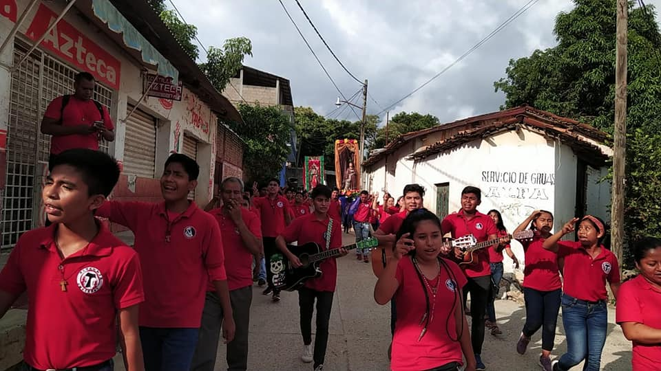
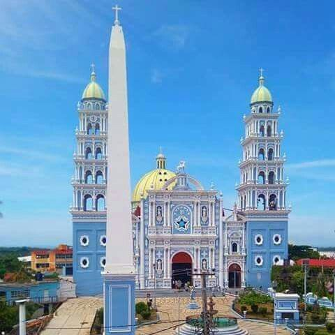
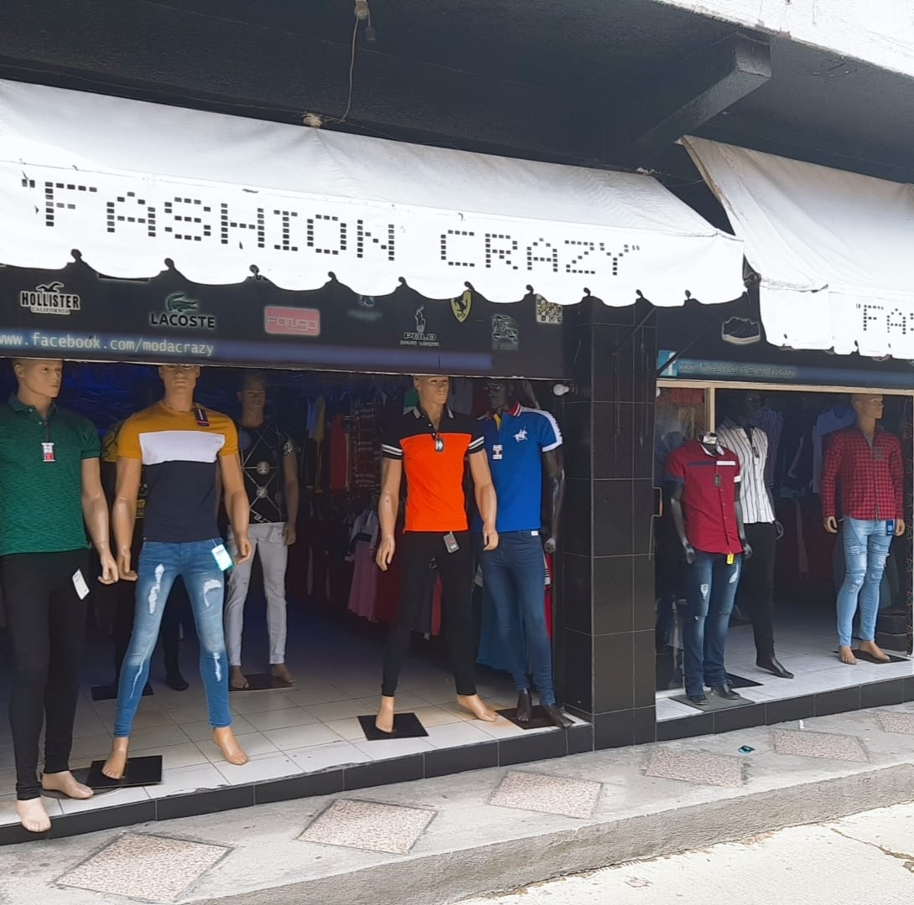

La ubicación de alvernia en si no se tiene un registro exacto, pero mas sin en cambio si se puede
localizar algunos sitios donde se te brindara información de Alvernia.
DISPENSARIO
Lugar donde se realizan los retiros espirituales.

Dispensario
IGLESIA
Lugar muy conocido y donde se esta presente mas Alvernia los dias, jueves por la tarde y domingo por el mediodía

Iglesia de ometepecOf Pinterest, Cris Moctezuma
TIENDA FASHION CRAZY
Tienda de Freddy, donde se encontrará al servicio, mucho más tiempo y directo.

Tienda de FreddySin fines de publicidad a su tienda